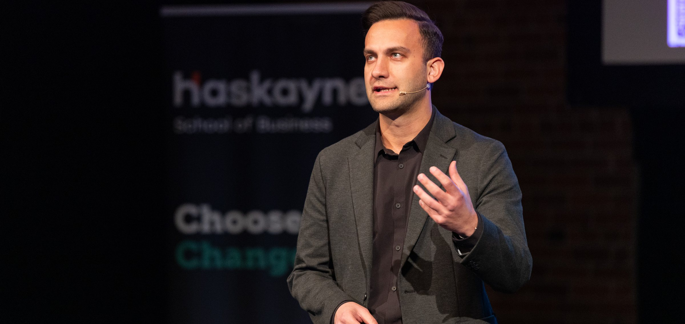
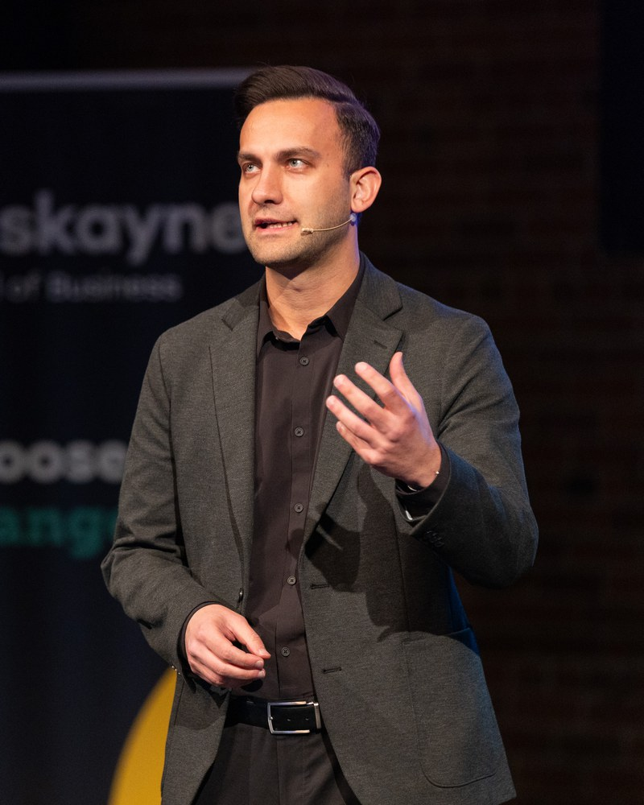
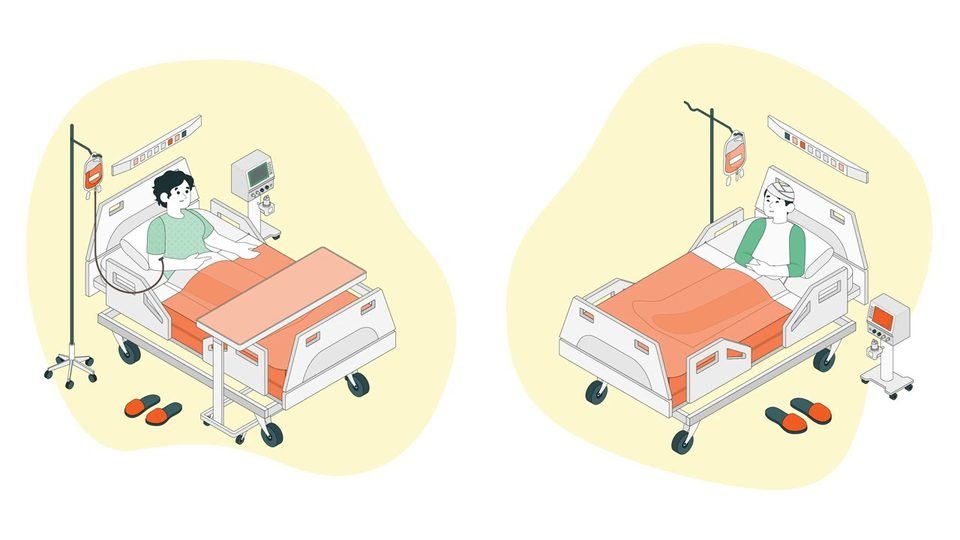
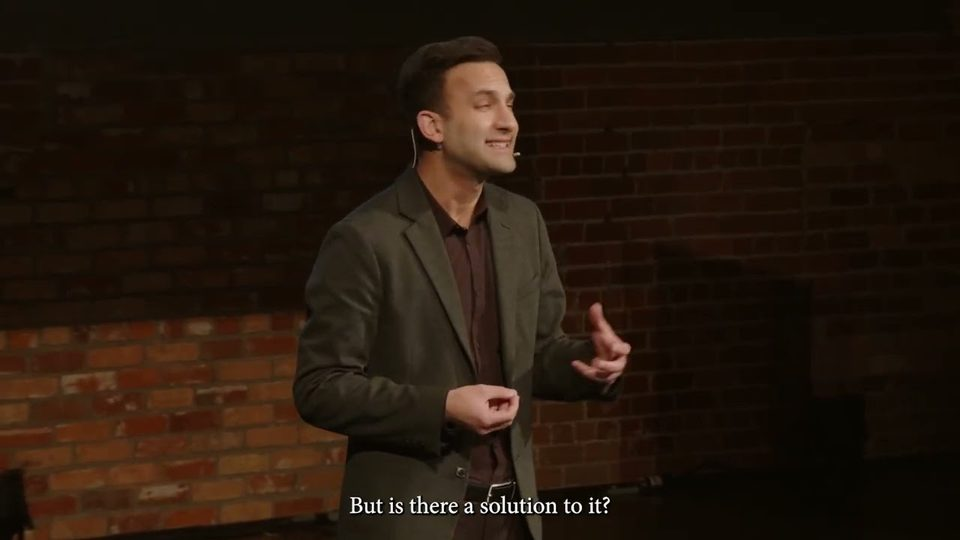
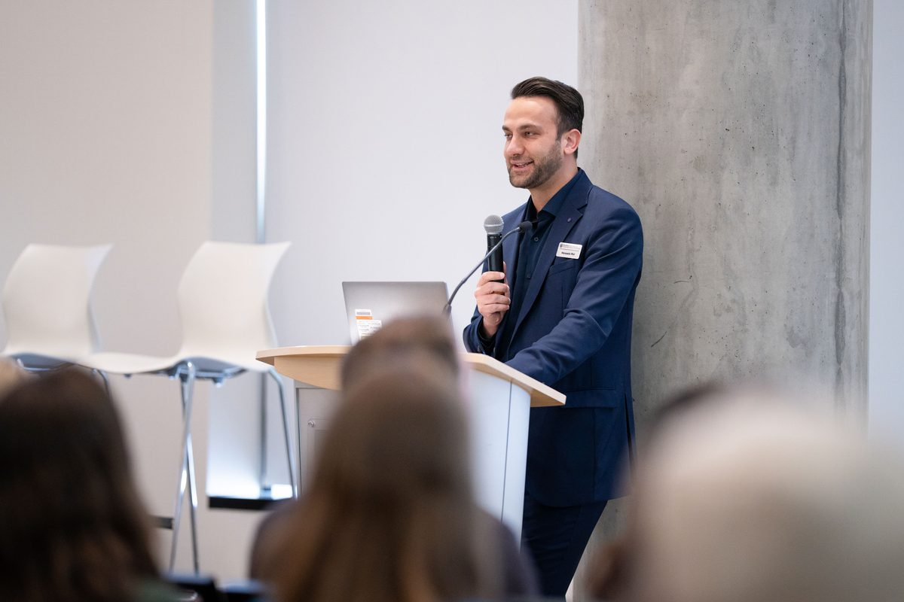
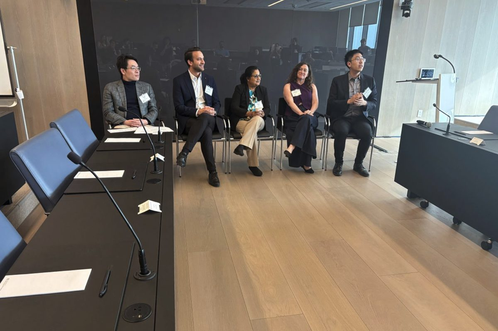
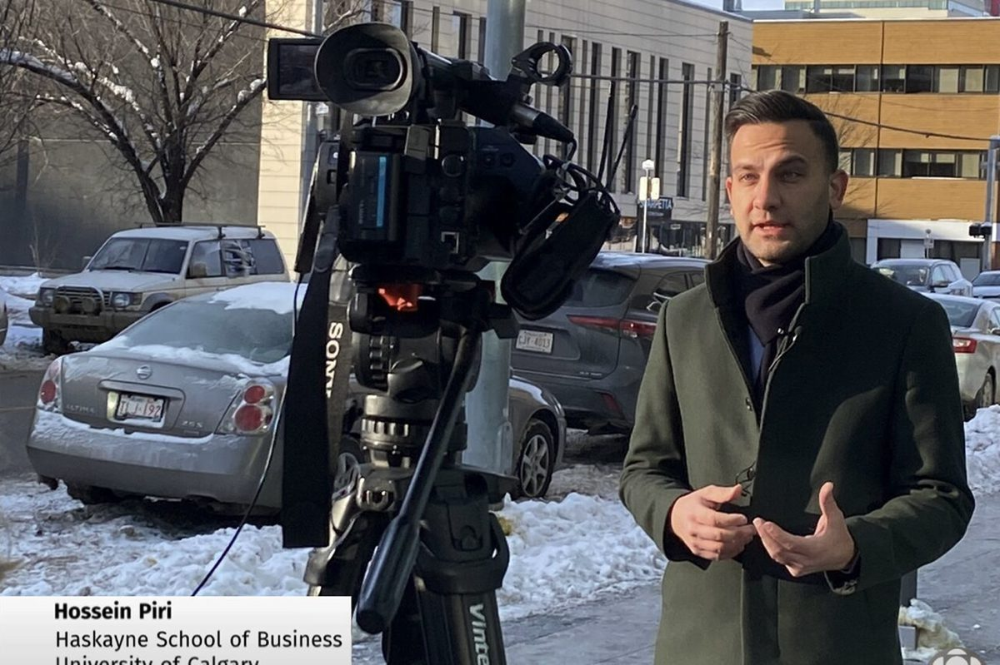
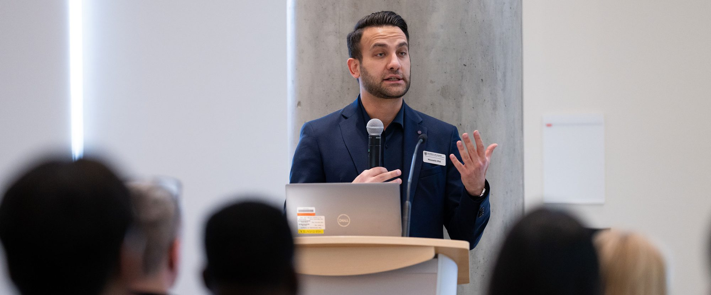
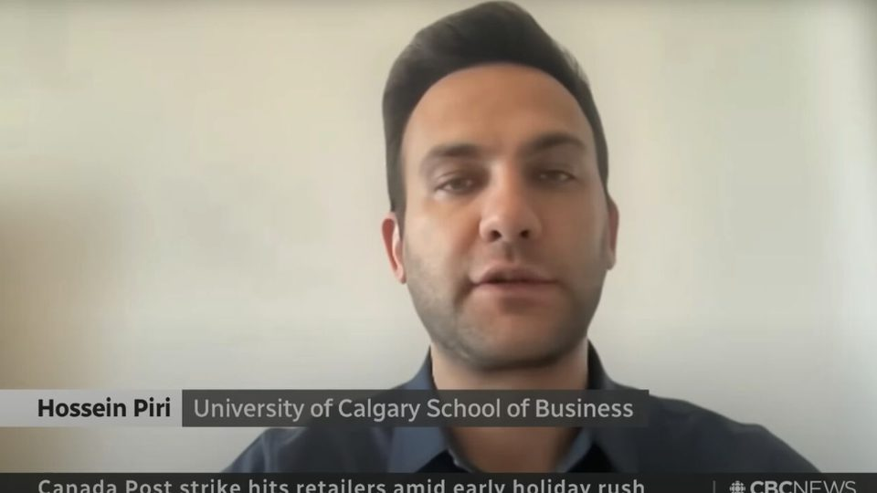
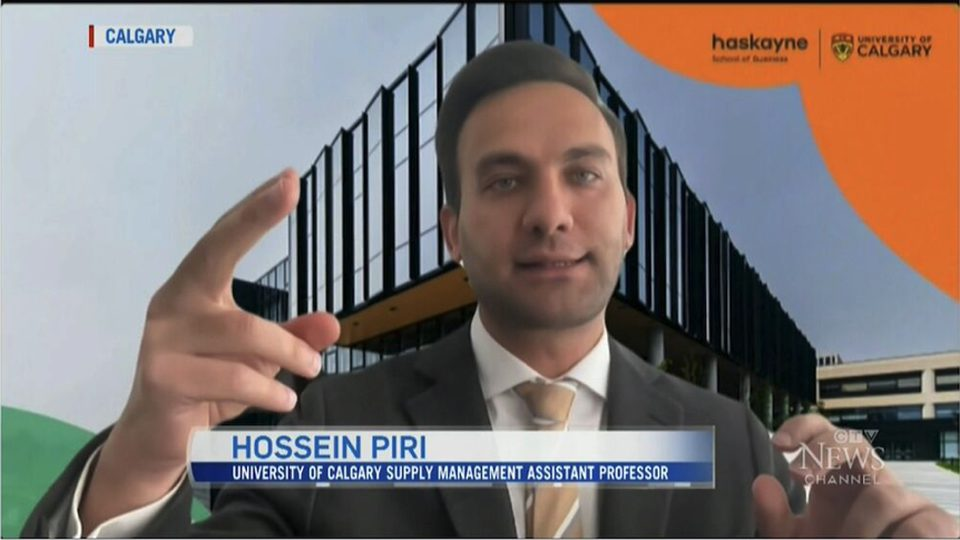

Hossein Piri
Human-aware optimization for healthcare and service operations.
Assistant Professor of Operations and Supply Chain Management
Haskayne School of Business, University of Calgary

Human-aware optimization for healthcare and service operations.
Assistant Professor of Operations and Supply Chain Management
Haskayne School of Business, University of Calgary

Speaking at the Haskayne Business Exchange, 2025.
About
I am an Assistant Professor of Operations and Supply Chain Management at the Haskayne School of Business, University of Calgary. I received my Ph.D. in Management Science from the Sauder School of Business at the University of British Columbia, where I was advised by Steven Shechter, Tim Huh, and Mahesh Nagarajan.
My research combines analytical modeling and machine learning to design decisions that account for how people respond. More accurate predictions do not necessarily lead to better operational decisions, because decisions can change the behavior on which their success depends. A hospital may issue more alerts to protect patients yet prevent less harm when repeated interruptions create a cry-wolf effect. A retailer's assortment shapes how customers allocate their budgets. My work puts these responses inside the decision model and asks how they should shape the allocation of scarce resources, from clinicians' attention to a firm's inventory and service capacity.
Most of my work starts from a practitioner's problem. I collaborate with physicians, nurses, and hospital partners, and I hold an NSERC Discovery Grant and an SSHRC Insight Development Grant as principal investigator. My research has appeared in Operations Research and is forthcoming in Manufacturing & Service Operations Management, and I teach prescriptive analytics and supply chain analytics at the MBA and undergraduate levels.
Research
Bedside monitors and prescription systems fire far more warnings than clinicians can absorb, and each interruption makes the next one easier to ignore. I design alerting policies that treat attention as the scarce resource it is, and show that fewer alerts, chosen well, prevent more harm. With generative AI, the message that accompanies a warning becomes a decision too.
Admission and follow-up decisions depend on scarce capacity, the cost of waiting, and whether patients return. These decisions also determine which patients the system later observes, so I study prediction and allocation together, from a resource-aware admission model for hypertensive pregnancies to adaptive follow-up after abnormal screening results.
In revenue management, customers respond to what they are offered. I study assortment and pricing when customers buy several products within a budget, booking policies for flexible products that let customers choose later, and recommendation systems whose suggestions may change what users want next.
Watch





News
Publications
Teaching

I teach by case and discussion. Students analyze a problem, challenge the assumptions behind a model, and defend a recommendation in front of their peers. I am developing a Formula 1 race-strategy simulation case for MBA prescriptive analytics with Saed Alizamir.
“I have never been in a class with such consistently high attendance rates over a semester.”From a student evaluation
“I have never had a prof so much as ask for feedback mid semester, nevermind actually acting upon that feedback.”From a student evaluation
In the media


Collaborators